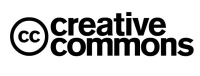
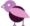

Licencia
General

Los contenidos escritos de este sitio están licenciados bajo una licencia Creative Commons de tipo Reconocimiento-No comercial-Compartir bajo la misma licencia 2.5 España. Esto significa que eres libre de:
- Copiar, distribuir y comunicar públicamente la obra.
- Hacer obras derivadas.
Bajo las siguientes condiciones:
- Debes reconocer los créditos de la obra de la manera especificada por el autor o el licenciador (pero no de una manera que sugiera que tiene su apoyo o apoyan el uso que hace de su obra).
- No puedes utilizar esta obra para fines comerciales.
- Si alteras o transformas esta obra, o generas una obra derivada, sólo puedes distribuir la obra generada bajo una licencia idéntica a ésta.
Para más información visita el sitio web oficial de la correspondiente licencia o ponte en contacto con nosotros a través nuestro formulario de contacto.
Recursos Gráficos y Utilidades
A continuación aparece un listado de algunas herramientas y recursos gráficos que estamos utilizando y su correspondiente autoría.
| El logotipo del pingüino es obra de Ana Belén Domínguez. | |
| Los iconos que encuentres en la web son de Nyssaj Brown. | |
| Utilizamos las Mootools de mad4milk para generar algún que otro efecto en JavaScript. | |
 |
Utilizamos Magpierss para mostrar los últimos artículos de nuestro blog. |